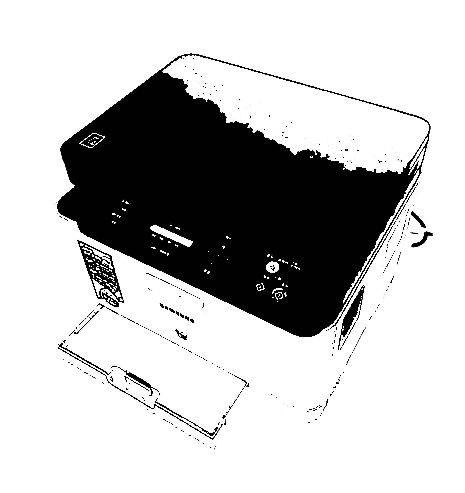
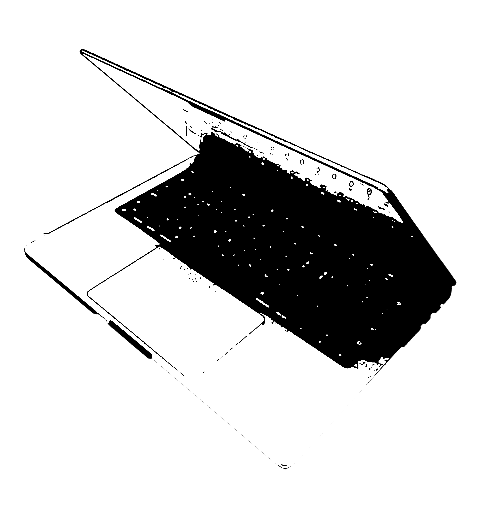

김재현 jaehyun Kim
〈Reincarnating〉
1차 수리
3년치 기록이 담긴 5권의 다이어리에서 필요한 부분만 잘라내어 다양하게 엮기 위해서는 실물 페이지를 디지털 이미지로 변환하는 과정이 필요했다. 스캐너로 다이어리를 전부 스캔하여 작업을 위한 기본적인 재료를 얻어내었다.
2차 수리

스캔한 페이지들을 usb에 담아서 들고 다녔다. 스캔본은 대략 450장 가까이 되었는데, usb에 연도별, 월별 파일을 만들어두니 활용하기 좋게 분류되었다.
3차 수리
일기장의 내용을 새로운 영상, 이미지, 그리고 책으로 만들기 위해서는 맥북이 필요했다. 정확히 말하자면 맥북에 설치된 어도비 프로그램들이 필요했다. 우선 스캔본에서 글과 이미지들을 추출하고 적절하게 가공하는 데에는 포토샵이 사용되었다. 생성된 이미지들을 애프터이펙트로 불러와 4편의 영상을 만들었고, 일러스트레이터로 불러와 한 장의 이미지를 제작했다. 일기를 다시 읽으며 발췌한 내용들과 떠오른 생각들은 인디자인을 거쳐 4권의 책으로 완성되었다.